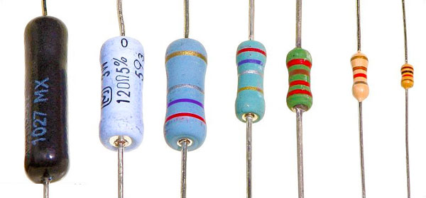
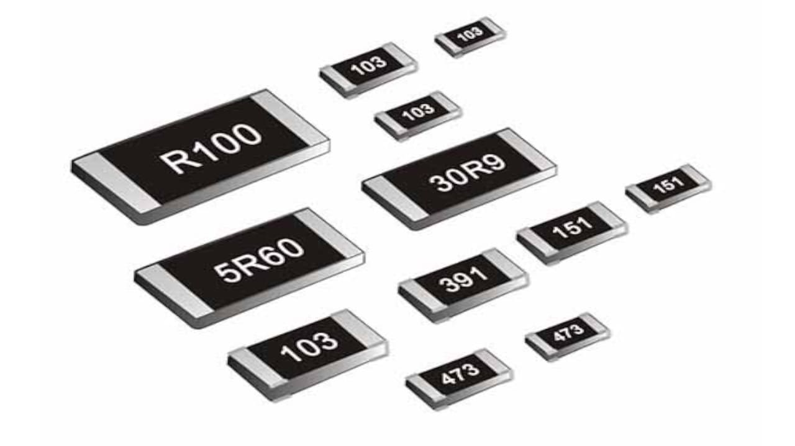
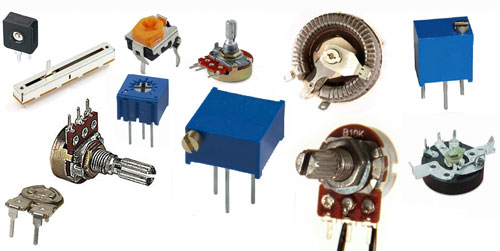
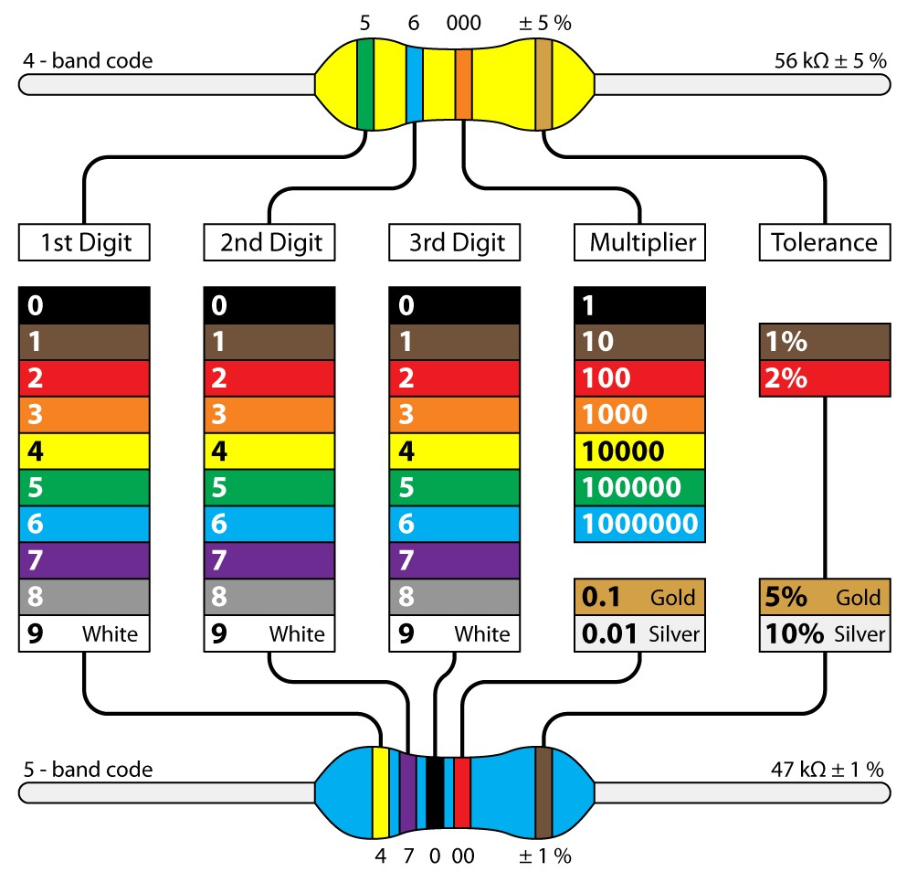

Pasívne prvky #
Rezistor #
V elektronických obvodoch je elektrický odpor reprezentovaný pasívnym prvkom - rezistorom (ľudové pomenovanie odpor nie je správne). Hodnota odporu rezistora je udávaná v jednotkách Ohm, značka \(\Omega\). V zapojeniach označujeme rezistor písmenom R.
{kind=link}
Obr. 12 Prúd a napätie rezistorom.#
Pre vzťah prúdu pretekajúcim ideálnym rezistorom, jeho odporom a úbytkom napätia na rezistore platí Ohmov zákon
Prechodom prúdu rezistorom sa energia elektrického prúdu mení na teplo, stratový výkon ktorý vzniká na rezistore je potom
Prevedenie #
TODO - odpor vodiča
Technologicky sú rezistory vyrábané rôznymi postupmi v závislosti od účelu ich použitia, zvyčajne s využitím materiálov s rôznym merným odporom ako vodičov s rôznym prierezom alebo vo forme tenkých uhlíkových alebo kovových vrstiev nanesených na vhodný nevodivý materiál, zvyčajne keramiku.
{kind=link}

Obr. 13 Typy rezistorov THT (Through Hole Technology).#
{kind=link}

Obr. 14 Typy rezistorov SMD (Surface Mount Device).#
V niektorých prípadoch je vhodné v elektrickom obvode použiť rezistor, ktorého hodnotu možeme mechanicky meniť, takéto rezistory potom označujeme sa ako potenciometre, trimre alebo premenné rezistory.
{kind=link}

Obr. 15 Premenné rezistory.#
V schémach zapojenia obvodov sa používajú pre rezistory nasledujúce značky (\(R_1\) rezistor podľa európskeho značenia, \(R_2\) rezistor podľa anglosaského značenia, \(R_3\) potenciometer, \(R_4\) trimer)
{kind=link}
Obr. 16 Značky rezistorov.#
Hodnoty rezistorov #
Hodnoty rezistorov sa môžu pohybovať v širokom rozsahu niekoľkých rádov. Aby bolo možné vyrábať rezistory v definovanom počte hodnôt, boli určené rady hodnôt. Hodnoty sú určené tak, aby v logaritmickej mierke boli približne rovnako rozložené v rámci jedného rádu, podľa vzťahu
kde \(m\) je počet hodnôt v ráde a \(n=0 \dots m-1\).
Výpočet hodnôt v rade E6
Hodnoty pre radu E6 spočítame nasledujúcim programom
from numpy import *
m = 6
for n in range(m): # 0 .. m-1
r = power(10, n)
x = power(r, 1/m)
print(round(x,1), end=', ')
Reálne vyrábané hodnoty sa v niektorých hodnotách od teoretických mierne líšia, napr. v rade E6 je miesto hodnoty 3.2 použitá hodnota 3.3, miesto 4.6 hodnota 4.7.
Rada E3
1.0, 2.2, 4.7
Rada E6
1.0, 1.5, 2.2, 3.3, 4.7, 6.8
Rada E12
1.0, 1.2, 1.5, 1.8, 2.2, 2.7, 3.3, 3.9, 4.7, 5.6, 6.8, 8.2
Rada E24
1.0, 1.1, 1.2, 1.3, 1.5, 1.6, 1.8, 2.0, 2.2, 2.4, 2.7, 3.0,
3.3, 3.6, 3.9, 4.3, 4.7, 5.1, 5.6, 6.2, 6.8, 7.5, 8.2, 9.1
Vyrábané hodnoty sú dekadickými podielmi a násobkami týchto hodnôt, napríklad 0.1, 0.15 … 1, 1.5 … 10, 15, … 2200, 3300, … 680000, … Pre jednotlivé rady je stanovená tolerancia hodnôt tak, aby sa susedné hodnoty v rozsahu tolerancie neprekrývali, napríklad pre radu E3 je maximálna tolerancia 40%, pre E24 je tolerancia 5%.
Farebný kód #
Na rezistoroch bývala hodnota vyznačená textom, čo ale pri malých rozmeroch nie je príliš praktické, preto sa pri označovaní rezistorov začal používať aj kód hodnoty v podobe farebn7ch prúžkov na rezistore. Výhodou tohoto značenie je, že na rozdiel od textu je viditeľné zo všetkých strán.
{kind=link}

Obr. 17 Farebné značenie hodnôt rezistorov.#
Zapojenia rezistorov #
Sériové zapojenie rezistorov #
{kind=link}
Obr. 18 Sériové zapojenie rezistorov.#
Paralelné zapojenie rezistorov #
{kind=link}
Obr. 19 Paralelené zapojenie rezistorov.#
Kondenzátor #
{kind=link}
Obr. 20 Prúd a napätie kondenzátorom.#
Pre vzťah prúdu pretekajúcim kondenzátorom a napätím na konzenzátore